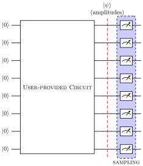

Basic Concepts
This section provides an overview of how the circuit simulation works in our framework.
Quantum Circuit
A quantum circuit is a sequence of quantum gates and operations acting on qubits, the basic units of quantum information.
Every computation, in MIMIQ Circuits starts with the construction of a quantum circuit. You can construct the circuit using the tools provided by the "MimiqCircuits" library, including gates and various quantum operations. Once you have built the circuit, you can proceed with the simulation.
A simple circuit with 4 Hadamard gates on 4 different qubits is given by
julia> c = Circuit()empty circuitjulia> for i in 1:4 push!(c, GateH(), i) end
or simply
julia> c = Circuit()empty circuitjulia> push!(c, GateH(), 1:4)4-qubit circuit with 4 instructions: ├── H @ q1 ├── H @ q2 ├── H @ q3 └── H @ q4
We are using a @ notation to indicates that a quantum operation, in this case a Hadamard gate H, is applied to one or many qubits. Hadamard gates are single qubit gates, so they can be applied only to one qubit at a time (e.g. H @ q0 in the example). In this notation we indicate with q0, q1, q2... qubits or quantum bit targets and with c0, c1, c2, ... classical bit targets.
Indexing of targets is different between Julia and Python. Julia indices starts from 1, while Python indices start from 0. Pay extra attention when translating code from Python or to Julia and vice versa (e.g. when importing code from other frameworks).
Quantum circuits can be easily manipulated in MimiqCircuits. Some common operations include:
- Adding gates or quantum operations (e.g. with
push!(circuit, operation, targets...)),
julia> c = Circuit()empty circuitjulia> push!(c, GateH(), 1)1-qubit circuit with 1 instructions: └── H @ q1julia> push!(c, GateCX(), 1, 2)2-qubit circuit with 2 instructions: ├── H @ q1 └── CX @ q1, q2julia> push!(c, GateRX(π / 4), 2)2-qubit circuit with 3 instructions: ├── H @ q1 ├── CX @ q1, q2 └── RX(θ=0.7853981633974483) @ q2julia> push!(c, GateCH(), 2, 1)2-qubit circuit with 4 instructions: ├── H @ q1 ├── CX @ q1, q2 ├── RX(θ=0.7853981633974483) @ q2 └── CH @ q2, q1julia> push!(c, Barrier(2), 1, 2)2-qubit circuit with 5 instructions: ├── H @ q1 ├── CX @ q1, q2 ├── RX(θ=0.7853981633974483) @ q2 ├── CH @ q2, q1 └── Barrier @ q1, q2julia> push!(c, Measure(), 1, 1)2-qubit circuit with 6 instructions: ├── H @ q1 ├── CX @ q1, q2 ├── RX(θ=0.7853981633974483) @ q2 ├── CH @ q2, q1 ├── Barrier @ q1, q2 └── Measure @ q1c1
- Taking the inverse of a circuit or any other object (with
inverse(op or circuit))
julia> c = let c = Circuit() push!(c, GateH(), 1:2) push!(c, GateCRX(π / 4), 1, 2) push!(c, GateS(), 1) c end2-qubit circuit with 4 instructions: ├── H @ q1 ├── H @ q2 ├── CRX(θ=0.7853981633974483) @ q1, q2 └── S @ q1julia> cinv = inverse(c)2-qubit circuit with 4 instructions: ├── SDG @ q1 ├── CRX(θ=-0.7853981633974483) @ q1, q2 ├── H @ q2 └── H @ q1
- Appending a circuit to another (with
append!(circuit, other))
c = let c = Circuit()
push!(c, GateH(), 1:4)
end
c1 = let c = Circuit()
push!(c1, GateCH(), 1, 2:4)
end
append!(c, c1)For a full list of functions see MimiqCircuitsBase.Circuit.
Bit States
We define bit states as the computational states of a multi qubit system in which each qubit state is determined. These states are often indicated by the notation
\[\ket{01001010\cdots} \equiv \ket{0}\ket{1}\ket{0}\ket{0}\ket{1}\ket{0}\ket{1}\ket{0}\cdots.\]
Each bit state is fully specified a string of zeros and ones, and hence they are sometimes also referred to as "bitstrings".
The set of all the possible bit states form an complete and orthogonal basis for the quantum state of a multiqubit system, meaning that an arbitrary quantum state of such system can be written as a sum over bit states with complex coefficients. For example, for a 2 qubit system:
\[\ket{\psi} = c_0 \ket{00} + c_1 \ket{10} + c_2 \ket{01} + c_3 \ket{11} \qquad \forall c_0, c_1, c_2, c_3, \sum_0^3 c_i^2 = 1.\]
MimiqCircuits provides users with a set of utilities to handle, construct and manipulate bit states.
Few things you can do with BitState:
- Create a bit state for a :math
N-qubit system (:math:N=4in the example)
julia> x = BitState(4)4-qubit BitState with 0 non-zero qubits: └── |0000⟩
- Create a bit state from a list of nonzero qubits, or from an integer (converting from its binary representation)
x = BitState(10, [1,3,8])
y = BitState(10, 5)- Create a bit state using a generator function (lambda function in this case):
julia> x = BitState(10) do i iseven(x) endERROR: MethodError: no method matching iseven(::BitState) Closest candidates are: iseven(!Matched::AbstractFloat) @ Base float.jl:933 iseven(!Matched::Missing) @ Base missing.jl:101 iseven(!Matched::BigInt) @ Base gmp.jl:356 ...
- Convert a BitState to a string, index or integer (remember in Julia,
indices starts from 1)
julia> bs = BitState(10, 534)10-qubit BitState with 4 non-zero qubits: ├── |0110100001⟩ └── non-zero qubits: [2, 3, 5, 10]julia> to01(bs)"0110100001"julia> bitstate_to_index(bs)535julia> bitstate_to_integer(bs)534
- Get the state of each qubit, the list of nonzero qubits, or even iterate over the qubits
julia> bs = BitState(10, 534)10-qubit BitState with 4 non-zero qubits: ├── |0110100001⟩ └── non-zero qubits: [2, 3, 5, 10]julia> bs[10]truejulia> nonzeros(bs)4-element Vector{Int64}: 2 3 5 10julia> for i in bs print(i) endfalsetruetruefalsetruefalsefalsefalsefalsetrue
Besides accessing the quantum state amplitudes corresponding to different bit states, with MIMIQ Circuits, you also have the flexibility to sample the final state in much the same way as is the case for a real quantum computer.
Executing the Circuit
The simulation of a circuit is then performed via the MimiqCircuits.execute function, which start a remote job on the MIMIQ Remote Services. When a job is completed, results can be retrieved by the MimiqCircuits.getresults function. Upon execution, you can specify the algorithm used in the simulation, the number of samples to be performed or the bit states for which the amplitudes should be computed.
A simulation performs the computation
\[\ket{\psi} = U \ket{000\cdots}\]
The starting state is always the one where all the qubits are in the $\ket{0}$ state. After the circuit execution, the final state $\ket{\psi}$ is used for extracting amplitudes and for sampling.
Below we show a graphical representation of the circuit execution.

Sampling
Sampling is performed by applying a measurements operation to the final state on each and every qubit. With MIMIQ Circuits many samples can be obtained very efficiently without necessarily recomputing the whole circuit. The number of samples to obtain is specified through the samples keyword argument when executing a job.
The maximum number of samples a user can request is of 2^16
Amplitudes
Amplitudes corresponding to the bit states specified when submitting a simulation, are computed just before the sampling process, right after having applied the circuit provided by the user.
Classical Registries and Mid-Circuit Measurements
At present, MIMIQ Circuits does not support classical registers or measurements in the middle of the circuit. However, we are continuously working to enhance our framework with the plan to introduce these features in a coming update.